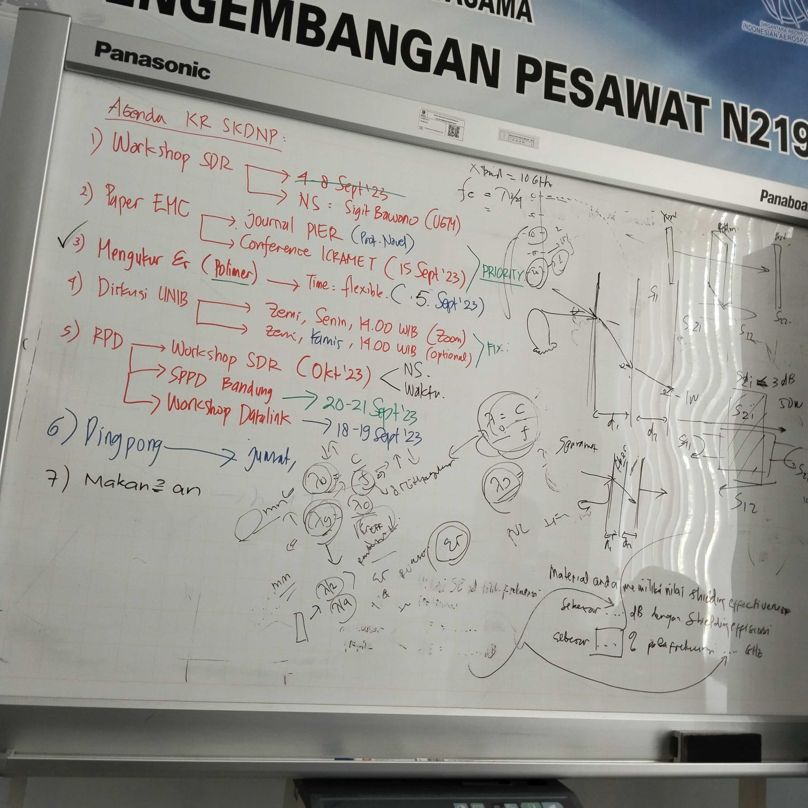
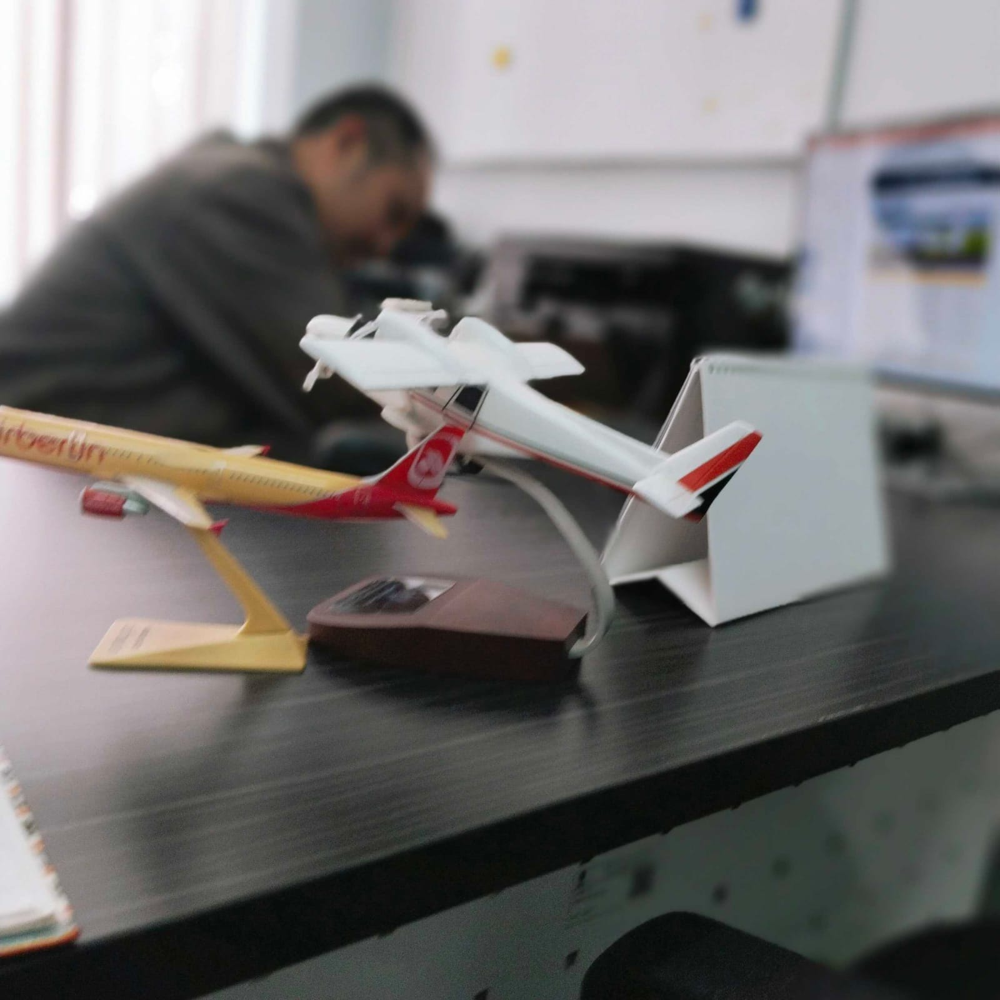
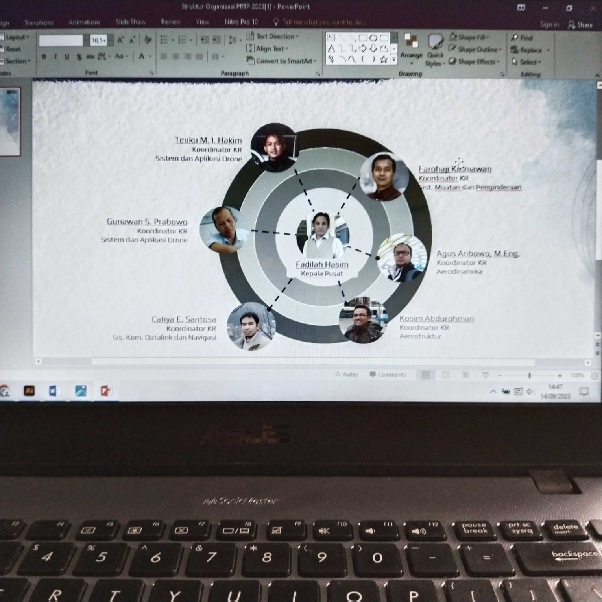
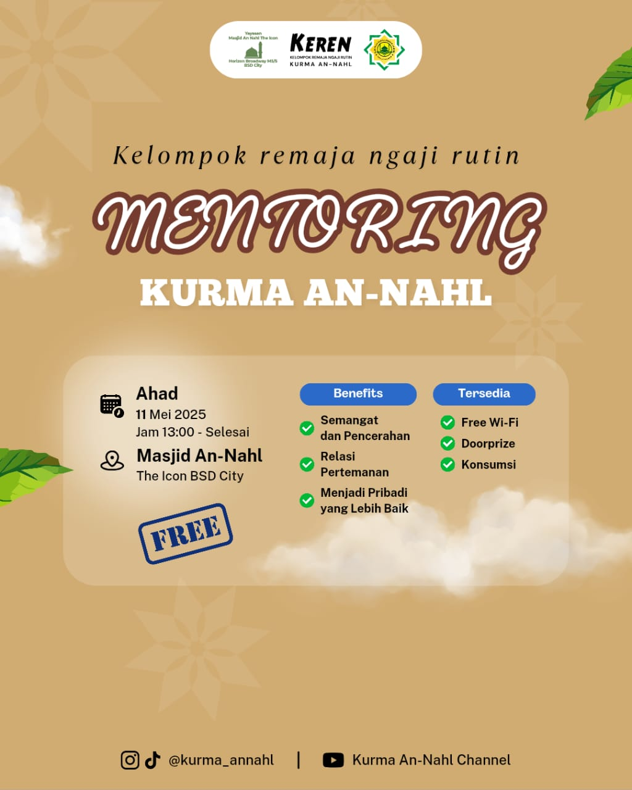
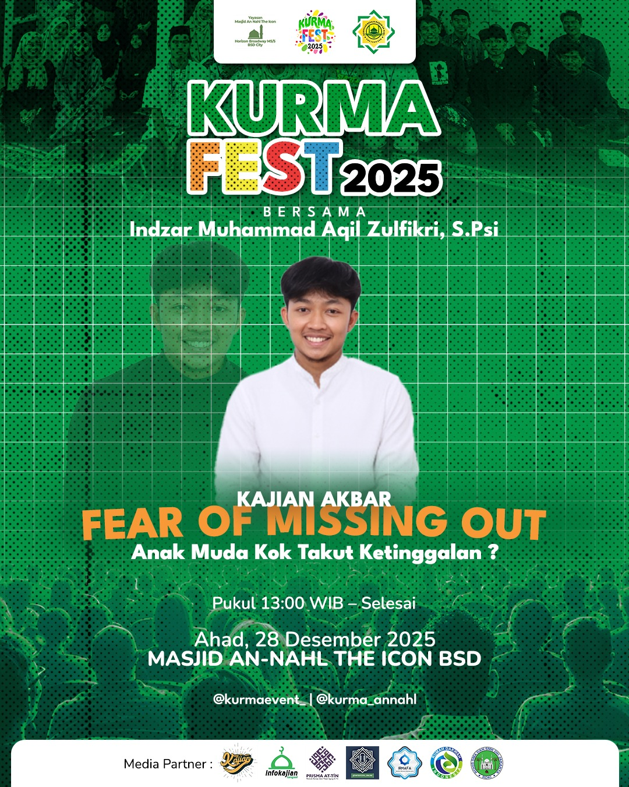
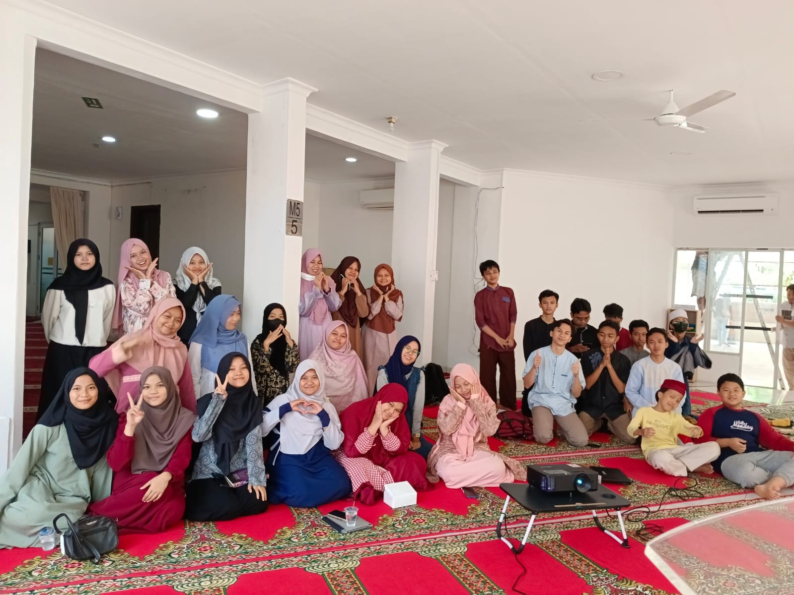

EXPERIENCE
Professional Experience
Hands-on experience through internship and volunteer work.



JANUARY 2023 - JUNE 2023
BRIN / LAPAN
Web Layout Designer
During my six-month internship at BRIN LAPAN, I served as a Web Layout Designer responsible for redesigning and optimizing the layout of their official website.
Key Responsibilities
- Redesigned website layout for improved user experience and navigation.
- Created responsive designs for different screen sizes.
- Collaborated with the development team.
- Considered accessibility requirements.



MARCH 2024 - PRESENT
KURMA
Creative Division Volunteer
As a volunteer in the Creative Division of Kumpulan Remaja Masjid An-Nahl, I contribute design skills to support community activities and events.
Key Contributions
- Designed Instagram feed content.
- Created event posters.
- Developed visual branding for programs.
- Collaborated with team members.